Longer Differences and Smoothing¶
One way to reduce $\sigma_k/\sigma_R$ is to reduce noise in new cases by taking a longer difference or smoothing case counts in some other way. How does this affect the estimation and interpretation of $R_t$?
As in the first section, we start with the approximate recursive relation If we instead look at a longer difference, where $\overline {T_{t,L} e^{\gamma(R_{t,L} - 1)}}$ is some intermediate value in between the minimum and maximum of the ${ \frac{\tau(t-i)}{\tau(t-i-1)} e^{\gamma (R_{t-i} - 1)} }_{i=0}^{L-1}$.
If testing is constant over time, we can then obtain an interpretable $\overline{R_{t,L}}$ by using $k_{t,L} =\log(C(t)-C(t-L))$ and following the procedure above.
If testing varies with time, it becomes hard to separate testing rate changes from $R_t$ after taking long differnces.
!!! note The same analysis can be applied to other smoothing operations, i.e. using in place of $C(t) - C(t-L)$. However, there’s something strange about smoothing $C_t$, and then extracting a smoothed component of it using the Kalman filter. The inference afterwards is suspect; we would essentially be estimating a kernel regression of $C_t$ on time, and using the estimated regression as though it’s known with certainty.
When would long differences reduce variance? Well if $\Delta C(t) = \Delta C^\ast(t) + \epsilon_t$ with $\epsilon_t$ indepenedent over time with mean $0$ and constant variance, then you would need $C^\ast(t) - C^\ast(t-L)$ to increase faster than linearly with $L$. This is true if $C^\ast$ is growing exponentially.
Alternatively, if $\epsilon_t$ is not independent over time, but negatively correlated (as seems likely), then variance can decrease with $L$. For example, if $\Delta C(t) = C^\ast(t) - C^\ast(t-\delta)$ with $\delta$ a random, independent increment with mean $1$, then variance will tend to decrease with $L$ regardless of $C^\ast(t)$.
Results¶
Here, we will allow the initial and time varying mean of $R_{s,t}$ to depend on covariates.
reestimate=false
rlo=-1 #1 - eps(Float64)
rhi=1.2 #1+ eps(Float64)
K = size(X[1],2)
priors = (γ = truncated(Normal(1/7,1/7), 1/28, 1/1),
σR0 = truncated(Normal(1, 3), 0, Inf),
α0 = MvNormal(zeros(length(X0[1])), sqrt(10)), #truncated(Normal(1, 3), 0, Inf),
σR = truncated(Normal(0.25,1),0,Inf),
σk = truncated(Normal(0.1, 5), 0, Inf),
ρ = Uniform(rlo, rhi),
α = MvNormal(zeros(K), sqrt(10))
)
mdl = RT.RtRW(dlogk, X, X0, priors);
trans = as( (γ = asℝ₊, σR0 = asℝ₊, α0 = as(Array, length(X0[1])),
σR = asℝ₊, σk = asℝ₊, ρ=as(Real, rlo, rhi),
α = as(Array, K)) )
P = TransformedLogDensity(trans, mdl)
∇P = ADgradient(:ForwardDiff, P)
p0 = (γ = 1/7, σR0=1.0, α0 = zeros(length(X0[1])), σR=0.25, σk=2.0, ρ=1.0, α=zeros(K))
x0 = inverse(trans,p0)
@time LogDensityProblems.logdensity_and_gradient(∇P, x0);
2.121750 seconds (4.01 M allocations: 193.342 MiB, 9.42% gc time)
rng = MersenneTwister()
steps = 100
warmup=default_warmup_stages(local_optimization=nothing, #FindLocalOptimum(1e-6, 200),
stepsize_search=nothing,
init_steps=steps, middle_steps=steps,
terminating_steps=2*steps, doubling_stages=4, M=Symmetric)
x0 = x0
if !isfile("rt7.jld2") || reestimate
res = DynamicHMC.mcmc_keep_warmup(rng, ∇P, 2000;initialization = (q = x0, ϵ=0.1),
reporter = LogProgressReport(nothing, 25, 15),
warmup_stages =warmup);
post = transform.(trans,res.inference.chain)
@save "rt7.jld2" post
end
@load "rt7.jld2" post
p = post[1]
vals = hcat([vcat([length(v)==1 ? v : vec(v) for v in values(p)]...) for p in post]...)'
vals = reshape(vals, size(vals)..., 1)
names = vcat([length(p[s])==1 ? String(s) : String.(s).*"[".*string.(1:length(p[s])).*"]" for s in keys(p)]...)
cc = MCMCChains.Chains(vals, names)
display(plot(cc))
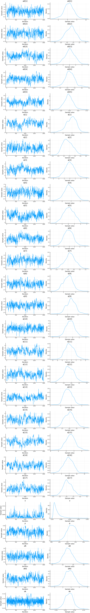
display(describe(cc))
2-element Array{ChainDataFrame,1}
Summary Statistics
parameters mean std naive_se mcse ess r_hat
────────── ─────── ────── ──────── ────── ──────── ──────
γ 0.0379 0.0025 0.0001 0.0003 108.5762 1.0094
σR0 2.8472 0.5901 0.0132 0.0656 48.7521 1.0343
α0[1] 0.7643 2.5342 0.0567 0.1661 187.4434 1.0018
α0[2] 0.7817 0.3966 0.0089 0.0296 171.7902 1.0026
α0[3] 0.0789 0.7772 0.0174 0.0986 37.6326 1.0154
α0[4] -0.3337 0.3151 0.0070 0.0315 82.1813 1.0035
α0[5] 0.2207 0.1280 0.0029 0.0147 47.5974 1.0322
σR 0.5057 0.0870 0.0019 0.0041 255.7555 1.0007
σk 0.1271 0.0024 0.0001 0.0001 446.0680 0.9998
ρ 0.9309 0.0116 0.0003 0.0010 107.4759 1.0163
α[1] 1.8516 1.0681 0.0239 0.1446 25.1433 1.0501
α[2] -1.1438 0.4449 0.0099 0.0416 105.1060 1.0127
α[3] -0.0083 0.8520 0.0191 0.1048 44.8124 1.0340
α[4] 0.8243 0.5430 0.0121 0.0493 124.4263 1.0032
α[5] 0.0994 0.8315 0.0186 0.1093 31.5759 0.9995
α[6] -0.1280 0.8602 0.0192 0.1103 40.2397 0.9995
α[7] 0.1713 0.4355 0.0097 0.0390 160.8671 1.0006
α[8] -0.6264 0.3775 0.0084 0.0300 124.0985 1.0104
α[9] -0.6664 0.4365 0.0098 0.0395 96.5867 1.0059
α[10] -0.3495 0.6313 0.0141 0.0483 173.2760 0.9999
α[11] -0.7192 1.9604 0.0438 0.2069 78.9574 1.0042
α[12] -0.7804 1.5990 0.0358 0.1891 39.9999 1.0244
α[13] -0.2912 0.3787 0.0085 0.0497 38.9951 1.0060
α[14] 0.0375 1.7094 0.0382 0.2016 77.1582 1.0000
α[15] 1.6999 1.8242 0.0408 0.2300 52.0837 1.0387
α[16] 4.5390 2.9292 0.0655 0.3112 78.9740 1.0021
α[17] 0.5028 1.6706 0.0374 0.2142 47.3735 1.0128
Quantiles
parameters 2.5% 25.0% 50.0% 75.0% 97.5%
────────── ─────── ─────── ─────── ─────── ───────
γ 0.0358 0.0363 0.0370 0.0385 0.0447
σR0 1.7240 2.4285 2.8403 3.2445 4.0325
α0[1] -4.6969 -0.8651 0.8286 2.4189 5.8212
α0[2] 0.0048 0.5012 0.8055 1.0475 1.5065
α0[3] -1.4842 -0.4245 0.0886 0.6008 1.5086
α0[4] -0.9854 -0.5299 -0.3391 -0.1320 0.3514
α0[5] -0.0282 0.1411 0.2189 0.2999 0.4784
σR 0.3405 0.4481 0.5033 0.5608 0.6871
σk 0.1224 0.1255 0.1272 0.1286 0.1318
ρ 0.9081 0.9232 0.9311 0.9394 0.9532
α[1] -0.4662 1.1087 1.9482 2.6229 3.7126
α[2] -1.8904 -1.4731 -1.1892 -0.8362 -0.2449
α[3] -1.6674 -0.5660 -0.0063 0.5603 1.6550
α[4] -0.2679 0.4651 0.8096 1.2006 1.8807
α[5] -1.5504 -0.4773 0.1007 0.7080 1.6550
α[6] -1.7526 -0.7365 -0.1388 0.4751 1.5934
α[7] -0.6846 -0.1063 0.1747 0.4540 1.0258
α[8] -1.3522 -0.8877 -0.6086 -0.3772 0.1172
α[9] -1.4709 -0.9545 -0.6563 -0.3671 0.2092
α[10] -1.5648 -0.7817 -0.3454 0.0693 0.8933
α[11] -4.1944 -2.0611 -0.8113 0.6417 3.3614
α[12] -4.0476 -1.7987 -0.7897 0.3959 2.3293
α[13] -0.9347 -0.5773 -0.3129 -0.0225 0.4680
α[14] -3.1091 -1.2218 0.0735 1.1604 3.4156
α[15] -1.7118 0.4843 1.7194 2.8932 5.6024
α[16] -1.3076 2.5101 4.5436 6.6371 9.8855
α[17] -2.5148 -0.6405 0.3466 1.6276 3.9682
display([1:length(x0vars) x0vars])
5×2 Array{Any,2}:
1 :constant
2 :logpopdens
3 Symbol("Percent.Unemployed..2018.")
4 Symbol("Percent.living.under.the.federal.poverty.line..2018.")
5 Symbol("Percent.at.risk.for.serious.illness.due.to.COVID")
display([1:length(xvars) xvars])
17×2 Array{Any,2}:
1 :constant
2 Symbol("Stay.at.home..shelter.in.place")
3 Symbol("State.of.emergency")
4 Symbol("Date.closed.K.12.schools")
5 Symbol("Closed.gyms")
6 Symbol("Closed.movie.theaters")
7 Symbol("Closed.day.cares")
8 Symbol("Date.banned.visitors.to.nursing.homes")
9 Symbol("Closed.non.essential.businesses")
10 Symbol("Closed.restaurants.except.take.out")
11 :retail_and_recreation_percent_change_from_baseline
12 :grocery_and_pharmacy_percent_change_from_baseline
13 :parks_percent_change_from_baseline
14 :transit_stations_percent_change_from_baseline
15 :workplaces_percent_change_from_baseline
16 :residential_percent_change_from_baseline
17 :percentchangebusinesses
states = unique(sdf.state)
states_to_plot = ["New York", "New Jersey","Massachusetts","California",
"Georgia","Illinois","Michigan",
"Ohio","Wisconsin","Washington"]
S = length(states_to_plot)
figs = fill(plot(), S)
for (i,st) in enumerate(states_to_plot)
s = findfirst(states.==st)
figr = RT.plotpostr(dates[s],dlogk[s],post, X[s], X0[s])
l = @layout [a{.1h}; grid(1,1)]
figs[i] = plot(plot(annotation=(0.5,0.5, st), framestyle = :none),
plot(figr, ylim=(-1,10)), layout=l)
display(figs[i])
end
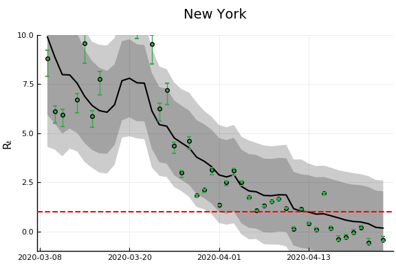 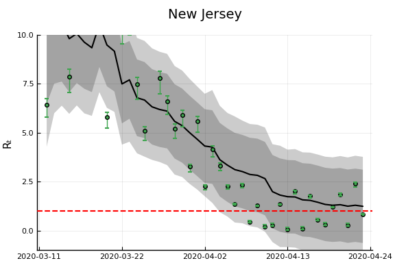 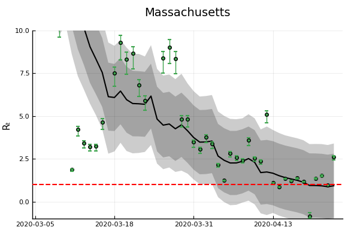 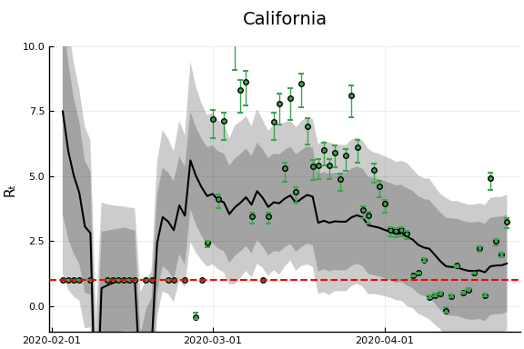 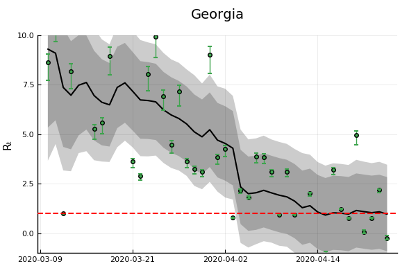 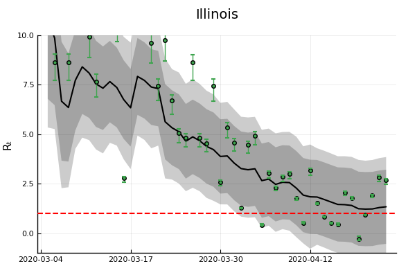 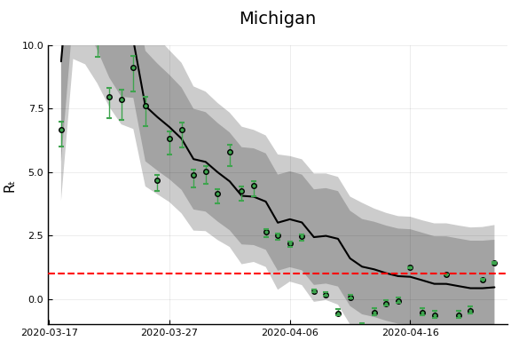 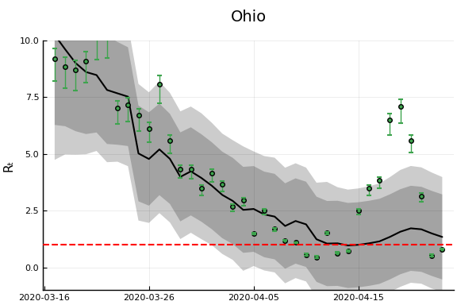 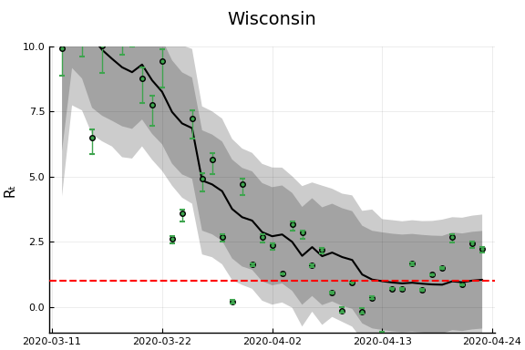 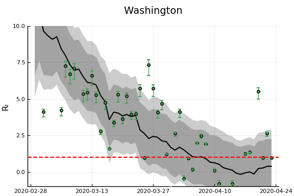
Another Derivation¶
An alternative (and easier) way to derive the same estimator will be described here. This approach will easily generalize to more complicated models, but let’s begin with the simplest SIR model with testing.
Then note that
and
which is the equation we have been using for estimation.
Incorporating death¶
If we add deaths to the model,
then,
Other observable states could similarly be added to the model.
Time delays¶
A drawback of the above approach is that it implies changes in $R_t$ show up in the derivatives of case and death numbers instantly. This is definitely not true. Instead consider a model where infections last $\ell$ days. After $\ell$ days, each infected person dies with probability $\pi$ and recovers otherwise. Then we have
Rearranging gives and
Note
These last two equations also hold in the model without time delay by setting $\ell=0$ and $\pi = \frac{p}{p+\gamma}$
Note
Random durations can be accomodated by replacing the shift by $\ell$ with a convolution.